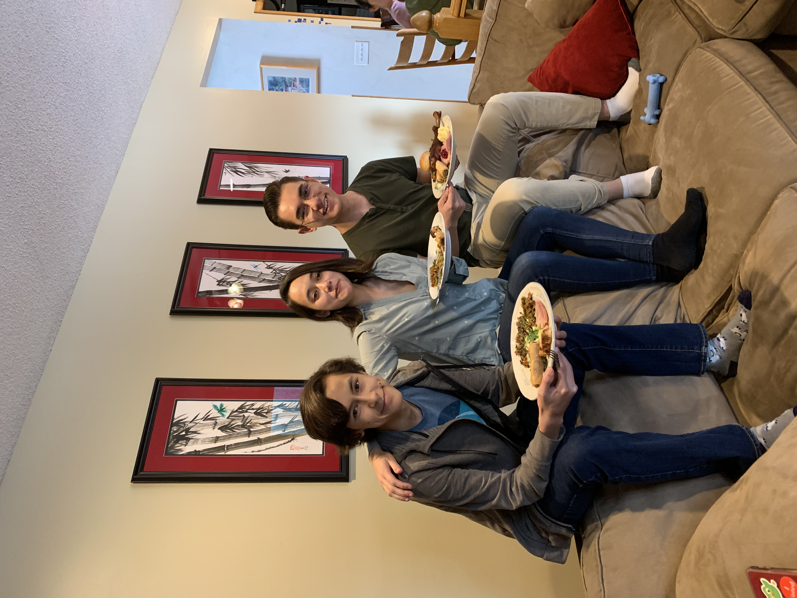

Hi, I'm Luke
(any pronouns)
Twitter | Steam
Email: ltkrier314@gmail.com | Discord: @ziixx
On the internet, however, I tend to go by Ziixx. The exact reason for the name I forgot, but it does phonically coincide with my favorite number: '6'.
Writing
a good paper, I think, is one of life's supreme joys. Unfettered, My mind will swell with excitement in the midst of a whirlwind of thoughts and ideas.
Likewise, however, rereading that paper again is one of life's greatest agitators. Every other sentence, I cannot help wincing at my own pompousness.
Though at odds, these two experiences are forever inseperable, and nor should they be!
I can't speak for anyone else, but personally, they represent
what I think are my two best qualities: on the one hand, a grand optimism and excitement from and through challenge; and on the other, a realistic, critical
edge to mediate with. Both are vitally important for mantaining a healthy outlook (Life's other supreme joys, if you were wondering, are cool stationery and yellow beanies).


online friends are still friends



-13 degrees fahrenheit!


This website is a collection of projects, essays, fun ideas, and events in my life. You could call it a blog, I view it more as a sort of digital scrapbook. I originally created this in 2019 after I made 'fade'. This is wesbite ver. 2